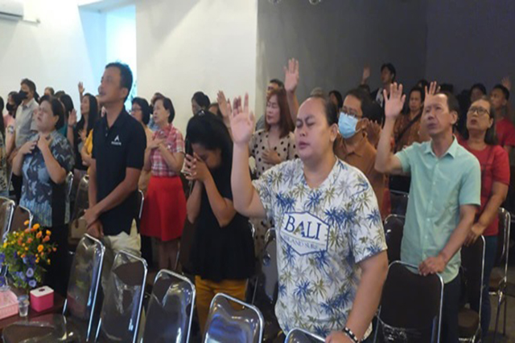

Gereja adalahtentang keluarga.
GSJA City Blessing melayani jemaat di Teluknaga, Tangerang. Impacting Lives, Transforming Cities.
Dari GSJA Teluk Naga menjadi City Blessing.
Pada Agustus 2003, Pdt. Samuel Darmanto melanjutkan pelayanan penggembalaan GSJA Teluk Naga yang kemudian bernama GSJA City Blessing.
GSJA Teluk Naga sebelumnya digembalakan oleh Pdt. Yusak Siru (alm.) hingga Juli 2003.
Kini jemaat beribadah setiap Minggu di lantai 2 gedung gereja, bersama Sekolah Minggu dan komunitas Youth & Campus.
Apa yang kami kejar bersama.
VISI
Menjadi gereja yang rapi, bersih, modern, relevan, dan spiritual.
MISI
Bertumbuh dalam kebenaran, bersekutu dalam kasih, bekerja untuk misi, menuju kesempurnaan Kristus.
Bertumbuh
Bertumbuh dalam kebenaran Firman Tuhan.
Bersekutu
Bersekutu dalam kasih sebagai satu keluarga.
Bekerja
Bekerja untuk misi, menjangkau kota kita.
Menuju
Menuju kesempurnaan Kristus.
Jejak pelayanan kami.
GSJA Teluk Naga
Jemaat digembalakan oleh Pdt. Yusak Siru (alm.) sampai Juli 2003.
Penggembalaan Pdt. Samuel Darmanto
Pelayanan dilanjutkan dan kemudian dikenal sebagai GSJA City Blessing.
Bertumbuh bersama generasi
Dua ibadah raya, Sekolah Minggu, Youth & Campus, serta berbagai persekutuan dan kegiatan jemaat.
Struktur organisasi & pelayan.
Pdt. Samuel Darmanto
Senior PastorMelayani dengan fokus pada pengajaran firman dan kepemimpinan transformasional.
Pdp. Grace Darmanto
Gembala SidangBerfokus pada pembinaan jemaat dan kaum wanita, doa syafaat, dan konseling keluarga.
Pi. Natan Prasetya
Staff PastoralMengarahkan generasi muda.
Pdp. Samuel Rendra
SekretarisAdministrasi gereja.
Mari terhubung dan jadi bagian dari keluarga kami.
Daftarkan diri dan keluarga Anda sebagai jemaat GSJA City Blessing. Data akan dikonfirmasi oleh admin gereja.
Daftar Jemaat ↗- 1Isi data diri dan alamat
- 2Tambahkan keluarga dan minat pelayanan
- 3Tunggu konfirmasi admin lewat email